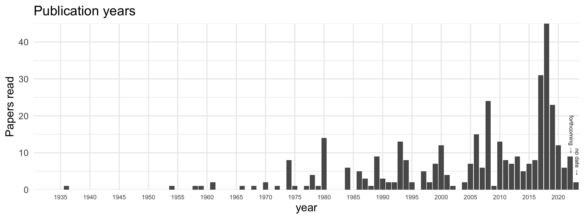
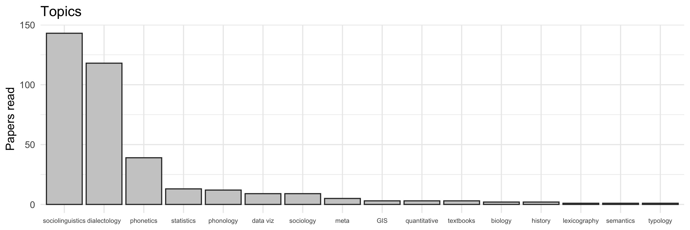
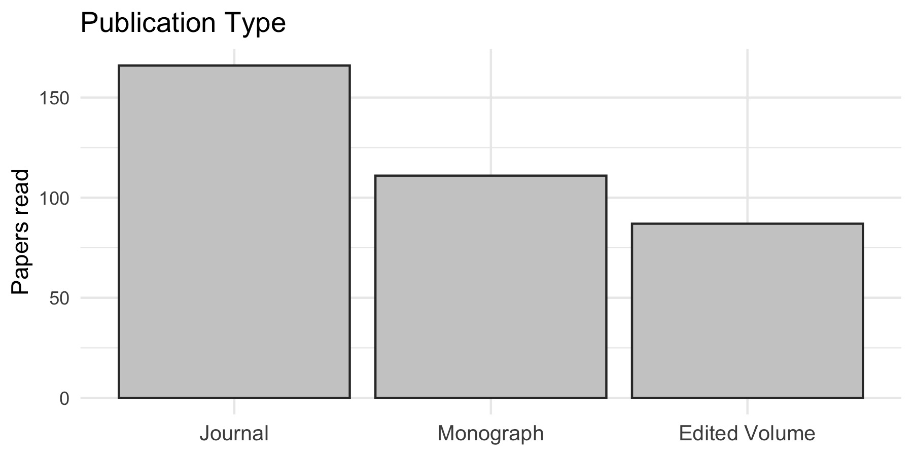
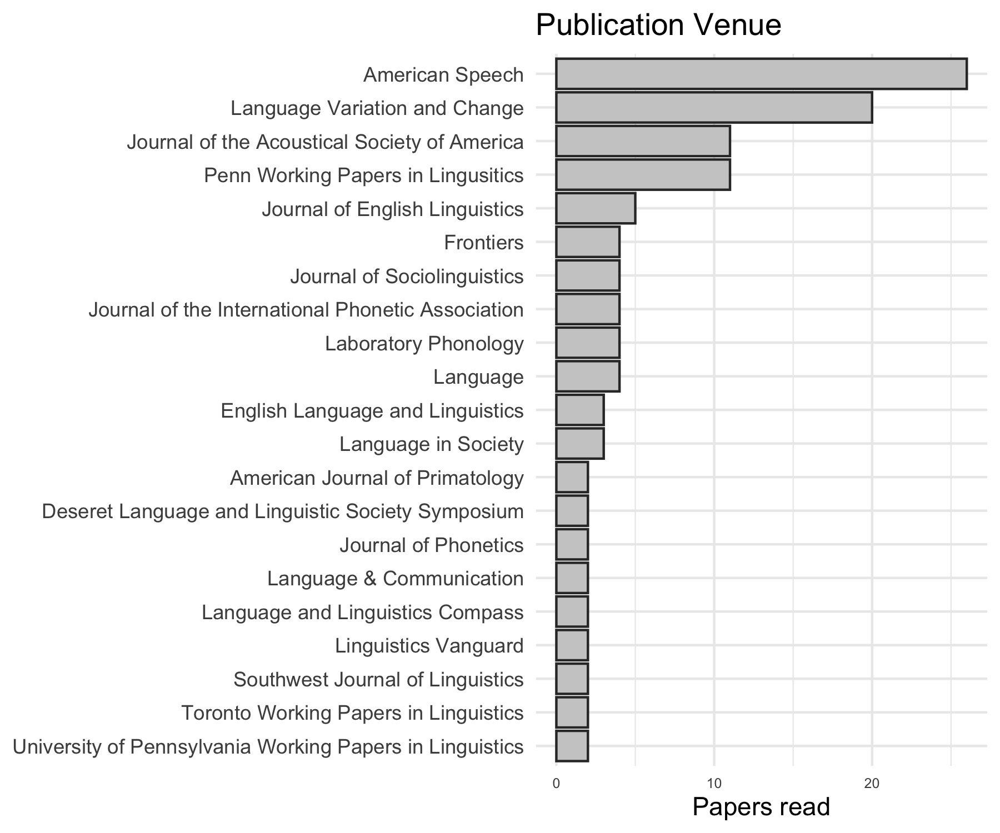

At the beginning of 2018, I set the ambitious goal of reading 365 papers during that year. I tweeted about it and blogged about it, but ultimately didn’t achieve my goal. Turns out 365 is a lot. Well, after 1338 days, I can finally say I’ve ready 365 papers! So here’s just some visuals to see what kinds of things I’ve been reading.
What counts as a “paper” and what counts as “reading” it? I didn’t have any hard and fast rules, but these were the guidelines I laid out before starting.
Chapters are okay: I think that in addition to journal articles, chapters from either edited volumes, monographs, or dissertations count as one each.
Notes are required: I like to take a lot of notes while I read things, so I’ll only count it if I dutifully summarize and take notes as I go along. This means that skimming an article doesn’t count. If I’ve already read an article but for whatever reason didn’t take notes, I’ll only count it if I go through it again and take notes.
Conferences don’t count: At least for me, attending a conference and taking notes there doesn’t count, and neither does going through the slides/poster if available. Not that there’s anything wrong with conferences, but this is #365papers after all.
In a few cases, I counted full books as a single entry, like if they had short chapters. I think a 3-page chapter of a book shouldn’t count the same as an article in Language, for example. Similarly, a lot of the Masters Theses I read were shorter and about the same as an article reading so those counted as one.
I will say that re-reading something counts a second time if I do it just as thoroughly. Things like textbook chapters from classes I’m teaching are the main culprit, but it’s nice to revisit things after a few years.
And to be clear, this doesn’t represent all the papers I’ve ever read. In fact, I’d say the bulk of reading for my dissertation happened before I started keeping track. I’ve kept decent notes about what I’ve read since about 2010, but I’ll just focus on the most recent 365 for now.
Pace
If I wanted to read 365 papers in a year, that’s obviously one paper a day. What was my actual pace and did it change? The following plot answers this. From left to right are the months of the year. The colored lines go up as I finished a paper that year. In dashed gray lines, I have benchmarks for where the colored lines would be if I had maintained a constant rate.

Looks like in 2018 and 2019 (when I was in the throes of dissertation-writing), my pace was usually somewhere around one paper every 4 to 8 days. So about one a week or occasionally two a week, on average. Starting in 2020 and continuing into this year, my pace is quicker and I’m reading a paper at least every three days on average.
My pace ebbed and flowed within a single year quite a bit and it’s interesting to see the patterns. In August of 2018 for example, I started really hunkering down and writing my dissertation, so there’s a sudden increase in pace (in the blue line). In early 2019 you can see I read in short bursts (I binge-read several 3rd Wave sociolinguistics papers). In June 2019 I took GIS and Stats courses so that uptick was from those classes. In September I was in a data visualization phase. And it looks like the time between when I submitted my dissertation and when I defended it (in December 2019), I didn’t do much reading at all.
My pace went up quite a bit in 2020 as I was transitioning from dissertation work to teaching. I read some material related to my job talk and was working on submitting my chapter in Speech in the Western States: Volume III. The biggest jump was in March 2020. Yes, that’s when COVID hit, but I was also fortunate to be hired as an “instructional designer” for BYU so I was prepping a course and doing a lot of reading. Things waned as I moved to Utah but when Fall semester hit, I kept that pretty quick pace up as I was prepping two new courses. This continued into 2021 as I prepped another two new courses. And you can see my recent uptick as I start getting ready to teach again.
Content
So now that we’ve got the pace covered, let’s look at the content itself.
Years
First, I’ll show the publication years of the things I read. Note that I do have two colums for “no date” and forthcoming: those are mostly reviews I did or other sneak-peaks at unpublished work.

I’m happy to see that a large proportion of what I read was recent, having come out since I started this little project. Looks like half of the papers I read came out in 2008 or later (or rather, within the last 10–14 years); a third was 2017 or later (the last 1–4 years). I honestly wish I had read even more recent stuff though because I feel a little behind the times. A quarter of what I read was before 1993. It’s good to read the classics, but I think I need to be staying more up to date though. Something that certainly accounts for this older skew is that I read while walking and the things I read are typically older (Trudgill 1978, Petyt 1980, Preston 1989, etc). I’m happy I read some older things, but I wish this plot had been more skewed towards the right.
Topics
Next, here’s a plot of the broad topic the papers fell in. I only gave each paper a single tag, and sometimes the decision to call something sociolinguistics vs dialectology, for example, was somewhat arbitrary. But this should give you a rough idea of what things I read.

It should come to no surprise that most of what I read was sociolinguistic in nature, followed closely by dialectology. The socio stuff is relevant to research and teaching and the dialectology stuff is mostly for research. Phonetics and statistics coming next are also exactly what I’d expect. I wish I had a bit wider range of topics though so that I can be more well-rounded of a linguist.
Publication Type
Next, here’s a basic plot on the publication type. I’ve divided everything into three broad categories: journal articles (which include conference proceedings), monographs, and edited volumes.

This is where I think I fall short. I’m happy to see that journal articles were the most common, but I think I should be reading a higher proportion of newer articles than I am. In fact, monographs and edited volumes combined make up 54% of what I read. This may also be because I read as I walk to and from my car and around my building, so I do get more regular book-reading time than sit-and-read-an-article time.
Publication Venue
Finally, the publication venue. Just focusing on the journal articles, here’s a list of the venues I read from the most. (I’ve filtered out venues that I only read from once or twice, for space issues).

Based on my research, it should come as no surprise that American Speech and LVC are the top two. I have a print subscription to American Speech, and I had a habit of reading through all the articles while on the bus. My guess is that the PWPL ones are mostly proceedings from NWAV too. JASA, JEngL, and J. Soc. are also not much of a surprise.
However, this plot again highlights what I think are my shortcomings. I feel like I need to be reading more Language in Society and Journal of Sociolinguistics. I also think I need to be reading about languages other than English too. I feel like I’ve latched on to my venues to my detriment and I’m missing a lot of interesting work by not expanding my horizons.
Outlook
I’m glad I did this exercise ad I’ll certainly continue with it. And looking back at the past 3⅔ years has been enlightening to say the least. My goals for the next 365 papers are the following:
Read a larger proportion of journal articles. Specifically, I want to go from 45% journal articles to 65%.
Read a larger proportion of newer articles. Specifically, I want over half of what I read to be since 2015 (6–9 years old).
Finish 365 papers sooner. It took 44 months to do this first batch. Since I’ve been keeping a pretty good pace of a paper every three days, I’ll aim for 36 months and finish by August 31, 2024.
I also want to get through my to-read list. I have about 50 papers on it. It is always growing, and as I read more I find more things to read. But my current list has been nagging me so I want to knock out a bunch of those.